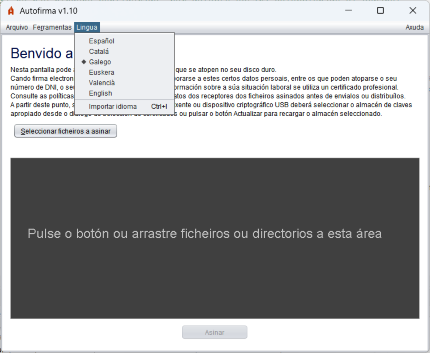

Na pantalla principal de Autofirma, permítese cambiar o idioma da aplicación mediante o menú "Lingua" situado na parte superior. Os idiomas dispoñibles son español, inglés, catalán, galego, eúscaro e valenciano.

Unha vez seleccionado, solicitarase ao usuario reiniciar Autofirma para aplicar os cambios correctamente.
Autofirma tamén permite ao usuario importar un idioma mediante un arquivo .zip que conteña os recursos do mesmo. Esta opción pódese usar seleccionando a opción "Importar Idioma" dentro do menú "Lingua".